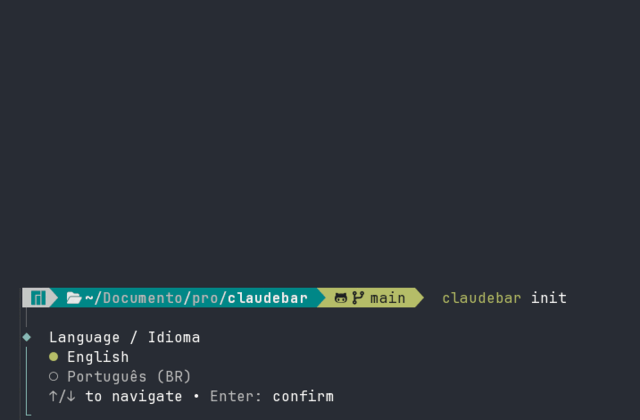

claudebar is the waiting-room monitor for your terminal — news, football, the live World Cup, and the time, scrolling along the bottom of Claude Code while the robot earns its keep.
You know the screen above the elevator. The one in the dentist's lobby. Now it reports to ~/.claude/settings.json.
npm install -g github:gomeslucasm/claudebar
What it does
Like the screen above an elevator, but it answers to a config file.
Each row cycles through its items every few seconds — news, football, the live World Cup scoreboard, with scorers next to each team.
Wrap ccstatusline or any command and run it as one of the rows. Your real bar keeps working; the entertainment just sits next to it.
A profile is a named set of rows. Flip it by hand, or have it switch automatically by time of day. Call it coffee-break programming.
Install
Two commands and a restart. No remote control required.
Requires Node.js 18+ and Claude Code. Install straight from GitHub — it builds itself:
npm install -g github:gomeslucasm/claudebarclaudebar init. The wizard builds your profiles and writes the statusLine hook into ~/.claude/settings.json.
Configure
What plays, where, and when.
claudebar init covers everything below interactively. You can also edit ~/.claudebar/config.json directly.
A row is one or more widgets that rotate together. You pick the seconds-per-item for each.
| Widget | Shows |
|---|---|
worldcup | Live World Cup scoreboard with scorers, from ESPN. |
news | RSS headlines: G1, Folha, UOL, Hacker News, TechCrunch, Ars, The Verge. |
soccer | Football headlines: GloboEsporte, ESPN, BBC Sport, UOL. |
passthrough | Runs any command and shows its output verbatim. Takes a row to itself. |
A profile is a complete, named set of rows — e.g. default and matchday. Manage them from the CLI, no need to re-run init:
claudebar profile # list, marks the active one claudebar profile use matchday # switch by hand claudebar profile add matchday # build a new profile claudebar profile edit default # rebuild its rows claudebar profile remove matchday # delete (rm, delete)
Or schedule switches by time of day. Each switch flips the active profile at a wall-clock time; a manual switch holds until the next scheduled one. Windows wrap past midnight.
claudebar profile switch add 18:00 matchday claudebar profile switch remove 18:00
claudebar init | Interactive setup. |
claudebar run | Render the rows once. |
claudebar profile | List profiles. |
claudebar profile use <name> | Switch by hand. |
claudebar profile add / edit / remove | Manage profiles. |
claudebar profile switch add / remove | Schedule switches. |
{
"activeProfile": "default",
"profiles": {
"default": [
[{ "widget": "passthrough",
"command": "npx -y ccstatusline@latest" }],
[{ "widget": "news",
"sources": ["HN", "TechCrunch"],
"interval": 10 }]
],
"matchday": [
[{ "widget": "worldcup", "interval": 8 }],
[{ "widget": "soccer",
"sources": ["GloboEsporte"],
"interval": 10 }]
]
},
"switches": [
{ "at": "18:00", "profile": "matchday" },
{ "at": "23:00", "profile": "default" }
]
}